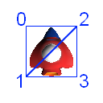

この文書ではスクリーンに画像を表示する手順について説明します。
Contents
次は画像を表示してみましょう。 フォルダー Tutorial/Sample02_01/のソリューションを開いてください。
画像を表示するには以下の手順を踏みます。
表示したい画像ファイルをプロジェクトに登録します。
PSM Studioのソリューションエクスプローラで、resourcesフォルダーを選択し、右クリック - [追加] - [ファイルを追加] で表示したい画像ファイルを選択します。

詳しくは「ビルドアクションについて」をご覧ください。
シェーダープログラムをプロジェクトに登録します。
ここでは頂点シェーダーSprite.vcgとフラグメントシェーダーSprite.fcgをプロジェクトに登録しています。
ファイルを登録したら、右クリック - [ビルドアクション] で ShaderProgramを設定しておきます。ビルドアクションにShaderProgramを設定しておくと、ビルド時にSprite.vcgとSprite.fcgをバイナリ形式のSprite.cgxファイルに変換してくれます。
画像ファイルとシェーダープログラムをプロジェクトに登録したら、プログラムで以下のように初期化処理を行ってください。
Sample02_01/AppMain.cs
public static void Initialize ()
{
graphics = new GraphicsContext();
...
texture = new Texture2D("/Application/resources/Player.png", false);
shaderProgram = new ShaderProgram("/Application/shaders/sprite.cgx");
...
}
Texture2D
texture = new Texture2D("/Application/resources/Player.png", false);では、テクスチャを作成しています。 「テクスチャを作成する」とはビデオメモリ上に画像のイメージを作成することを意味します。
ShaderProgram
プログラムでシェーダープログラムを読むときは、生成されたSprite.cgxを指定します。
shaderProgram = new ShaderProgram("/Application/shaders/sprite.cgx");では引数で指定したシェーダープログラムを実行時コンパイルします。 あとはshaderProgramからメソッドを使って処理を行うことができます。
次は、テクスチャを描画するための頂点バッファを設定します。 ここでは次のように3角のポリゴンを2枚書いて4角形にすることにします。
ソースコードを見ていきましょう。
頂点座標、テクスチャ座標、頂点色、インデックスを保持する領域を4頂点ぶん用意します。
- 頂点座標はx,y,z の3つが必要なので、floatの配列で12個確保しています。zは奥行きを指定するのに使用します。
- テクスチャ座標はu,vの2つが必要なので、floatの配列で8個確保します。
- 頂点の色は、r,g,b,aの4つが必要なので、floatの配列で16個確保します。
- インデックスは4つ確保します。インデックスは頂点描画の順番を指定するのに使用します。
AppMain.cs
public class AppMain
{
...
static float[] vertices=new float[12];
static float[] texcoords = {
0.0f, 0.0f, // 0 top left.
0.0f, 1.0f, // 1 bottom left.
1.0f, 0.0f, // 2 top right.
1.0f, 1.0f, // 3 bottom right.
};
static float[] colors = {
1.0f, 1.0f, 1.0f, 1.0f, // 0 top left.
1.0f, 1.0f, 1.0f, 1.0f, // 1 bottom left.
1.0f, 1.0f, 1.0f, 1.0f, // 2 top right.
1.0f, 1.0f, 1.0f, 1.0f, // 3 bottom right.
};
const int indexSize = 4;
static ushort[] indices;
...
頂点の座標はInitialize()で画像ファイルを読み込んだ後、設定します。
AppMain.cs
public static void Initialize ()
{
graphics = new GraphicsContext();
ImageRect rectScreen = graphics.Screen.Rectangle;
texture = new Texture2D("/Application/resources/Player.png", false);
shaderProgram = new ShaderProgram("/Application/shaders/Sprite.cgx");
shaderProgram.SetUniformBinding(0, "u_ScreenMatrix");
vertices[0]=0.0f; // x0
vertices[1]=0.0f; // y0
vertices[2]=0.0f; // z0
vertices[3]=0.0f; // x1
vertices[4]=texture.Height; // y1
vertices[5]=0.0f; // z1
vertices[6]=texture.Width; // x2
vertices[7]=0.0f; // y2
vertices[8]=0.0f; // z2
vertices[9]=texture.Width; // x3
vertices[10]=texture.Height; // y3
vertices[11]=0.0f; // z3
...
次に頂点バッファを設定します。VertexBuffer()の最初の引数で頂点のサイズ4を指定しています。
public static void Initialize ()
{
...
// vertex pos, texture, color
vertexBuffer = new VertexBuffer(4, indexSize, VertexFormat.Float3, VertexFormat.Float2, VertexFormat.Float4);
...
vertexBuffer.SetVertices(0, vertices);
vertexBuffer.SetVertices(1, texcoords);
vertexBuffer.SetVertices(2, colors);
vertexBuffer.SetIndices(indices);
graphics.SetVertexBuffer(0, vertexBuffer);
vertexBuffer.SetVertices()で頂点データを頂点バッファにコピーします。
graphics.SetVertexBuffer()で描画に使用する頂点バッファを指定します。
次にピクセル単位の座標系を、デフォルトのスクリーンの座標系に変換する行列を設定します。
public static void Initialize ()
{
...
ImageRect rectScreen = graphics.Screen.Rectangle;
...
screenMatrix = new Matrix4(
2.0f/rectScreen.Width, 0.0f, 0.0f, 0.0f,
0.0f, -2.0f/rectScreen.Height, 0.0f, 0.0f,
0.0f, 0.0f, 1.0f, 0.0f,
-1.0f, 1.0f, 0.0f, 1.0f
);
}
ImageRect rectScreen = graphics.Screen.Rectangle;でスクリーンの大きさを取得します。
２次元のゲームの座標系は、左上を原点とし、スクリーン下方向をY軸のプラスとするものが一般的です。 かつ、ディスプレイ解像度の1ピクセルを1単位とします。
それに対してデフォルトのスクリーンの座標系は、スクリーン中央を原点とし、スクリーン右側を1.0、左側を-1.0、上側を1.0、下側を-1.0、とします。

2Dゲームの座標系(左)とスクリーンの座標系(右)
そのため２次元のゲームの座標系（以下、ピクセルの座標系）で指定したポリゴンをスクリーンで表示するには、頂点をスクリーンの座標系に変換しなければなりません。
Matrix4()で設定されている値は、この変換を行うためのものです。
各要素を指定したら、あとは描画命令を実行します。
public static void Render ()
{
graphics.Clear();
graphics.SetShaderProgram(shaderProgram);
graphics.SetTexture(0, texture);
shaderProgram.SetUniformValue(0, ref screenMatrix);
graphics.DrawArrays(DrawMode.TriangleStrip, 0, indexSize);
graphics.SwapBuffers();
}
DrawArrays()が描画実行の関数です。
実行すると、スクリーンに画像が表示されます。
この章で使った画像表示のコードをクラスとして再利用できるようにしておきましょう。 クラスとして定義したものをTutoLib/SimpleSprite.csに記述しています。
※このSimpleSpriteクラスはプログラミングガイドの説明のためにつくった簡易的なもので、描画に最適な処理にはなっていません。 高速に描画する場合、 スプライトの効率的な描画について をご参照ください。